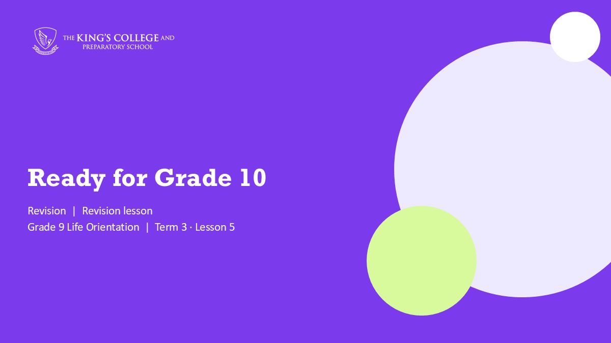

Term 3 · Lesson 5 · Revision lesson: practice paper
Ready for Grade 10
Start here
Today I will
- Reflect on what I learnt in the Senior Phase
- Practise a year-end paper on all terms under time
- Mark my paper and plan my exam studying
Look back over Grades 7, 8 and 9. What is ONE thing you learnt in LO that you will take with you into Grade 10?
Words to know
- GET
- General Education and Training: Grade R to Grade 9. Grades 7–9 are its Senior Phase.
- FET
- Further Education and Training: Grades 10–12 (or the NCV at a TVET college).
- Section C
- A paragraph answer: choose ONE of two questions.
- Mark allocation
- The numbers in brackets that show how many points to give.
Slides

Notes
Exam tips
- Read first: Read the instructions and all the questions.
- Plan time: About 1 minute per mark.
- Build answers: Statement, reason, qualifier, outcome.
- Use the source: Names and details from the scenario earn marks.
Looking back, looking ahead
- The end of the GET years: Grade 9 completes the Senior Phase (Grades 7–9). Next year is FET: Grades 10–12.
- What I've learnt: Who I am and what I value, relationships, health and safety, my rights, and my career options.
- What I'm taking along: My Grade 10 subjects, my study habits and the friends who help me grow.
- One goal for Grade 10: Write one SMART goal for next year and one habit to start now.
You are ready for Grade 10: read, plan, build, check, and keep growing.
'He who began a good work in you will carry it on to completion.' How have you grown in the last three years, and what do you trust God with for Grade 10?
Written practice
SECTION A (8 marks)
- A1Choose the correct answer. Write only the letter.
(a) Which of these is NOT a Chapter 9 institution? A Public Protector B SA Human Rights Commission C Constitutional Court D Electoral Commission
(b) Competing fairly and respecting opponents and officials is called… A gamesmanship B sportsmanship C sledging D doping
(c) Which subject is a gatekeeper subject for engineering? A Mathematical Literacy B Tourism C Mathematics D Life Orientation(3 x 1) (3) - A2Give ONE word or term for each description.
(a) Someone who sees bullying happen but does nothing.
(b) Violence against someone because of their gender.
(c) Freely giving your time and skills to help others without being paid.(3 x 1) (3) - A3True or false: 'You should always help a person with a disability, whether they ask for help or not.' If false, correct the statement.(1 x 2) (2)
SECTION B (9 marks)
At the inter-house netball final, Mia's team is losing by two goals. A teammate whispers that they should 'accidentally' bump the other team's goal shooter. In the stands, a few learners laugh at Sipho, a Grade 9 learner who uses a wheelchair and is keeping score for the other house. Coach Didi stops the game for a moment, reminds both teams and the spectators of the code of conduct, and thanks Sipho for scoring.
- B1Identify ONE example of gamesmanship in the source.(1 x 1) (1)
- B2Explain how laughing at Sipho goes against his constitutional rights.(1 x 2) (2)
- B3Recommend TWO ways the school can include learners with disabilities in sport. In each answer, also give the result.(2 x 2) (4)
- B4Explain why Coach Didi's response makes her a positive role model.(1 x 2) (2)
SECTION C (8 marks): answer ONE question
- C1Analyse TWO ways in which faith communities contribute to peace in South Africa.(2 x 4) (8)
- C2OR: Analyse TWO ways in which healthy coping strategies can help a teenager through a crisis.(2 x 4) (8)
Finished early?
Practise your weakest topic and set yourself up for next year.
- Choose your weakest topic from the year and do two questions from the matching set in a Term 1, 2 or 3 exam practice bank at the back of your Activity Book.
- Mark yourself with that term's exam practice memo on Google Classroom.
- On the reflection page, write one SMART goal for Grade 10.
- Write one study habit you will start now, before the year-end exam.